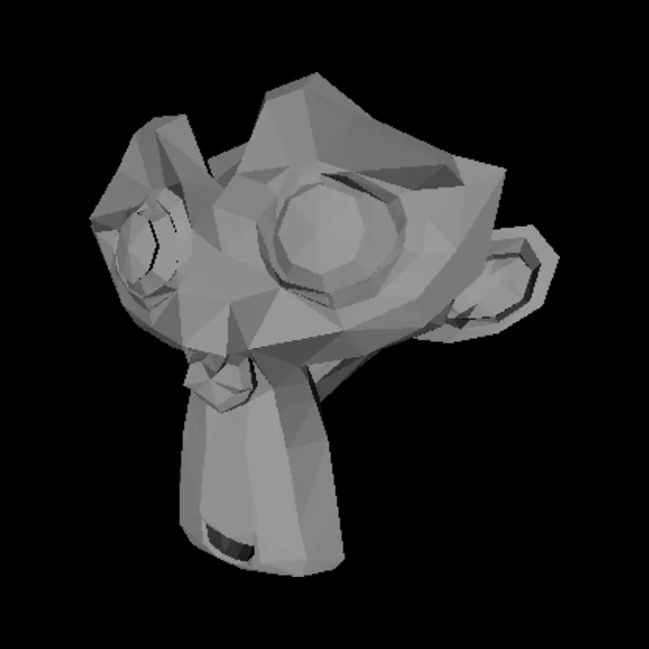

Case study 01 · Graphics · Java
Rasterix
How does a triangle become a pixel?
- Status
- Working prototype
- Language
- Java, about 1,500 lines
- Releases
- 4, for macOS, Windows, Linux
- Last release


render() into an image, without a window.What it is
Every 3D game and film frame ends the same way: a list of triangles in space has to become a grid of coloured pixels. Graphics cards do this in hardware, which makes it easy to use and hard to see.
Rasterix does every step on the CPU in plain Java. It loads a model from an OBJ file, rotates it, projects it with a perspective matrix, decides which pixels each triangle covers, keeps only the nearest surface at each pixel, and shades it. Java's BufferedImage is only used to hold and show the finished pixels.
The maths
Two ideas carry most of the work.
Perspective projection. A 4×4 matrix moves each vertex into clip space. Dividing by the fourth coordinate, w, makes distant things smaller. With field of view θ and f = 1 / tan(θ/2):
Edge functions and barycentric weights. For a screen point p and a triangle edge from a to b, the edge function is the signed area of the parallelogram they span. Divide the three edge functions by the triangle's own area and you get weights w1, w2, w3 that are all non-negative exactly when p is inside the triangle. The same weights then interpolate depth, colour and texture coordinates.
How the code is laid out
Each file maps to one stage of the pipeline:
OBJLoader.javareads vertices, faces and UVs.Matrix.java,Vector3D/4D.java,Quaternion.java: the linear algebra, written by hand.camera.javamoves the world into camera space.rasterizer.javaruns the pipeline per triangle: transform, normal, lighting, clipping against near and far planes, projection, perspective divide, screen mapping.LineDrawer.javadoes the pixel work: Bresenham lines, the barycentric fill, and textured fill.DepthBuffer.javastores the nearest depth seen at each pixel.
The heart of the fill loop, from LineDrawer.draw_triangle:
for (int y = minY; y <= maxY; y++) {
for (int x = minX; x <= maxX; x++) {
Vector3D p = new Vector3D(x + 0.5, y + 0.5, 0);
//barycentric weights
double w1 = (edge_function(v2, v3, p))/area;
double w2 = (edge_function(v3, v1, p))/area;
double w3 = (edge_function(v1, v2, p))/area;
//point inside the triangle
if (w1 >= 0 && w2 >= 0 && w3 >= 0) {
double z = w1 * v1.z + w2 * v2.z + w3 * v3.z;
Vector3D v = new Vector3D(x, y, z);
if (buffer.depthTest(v)) { ... }src/main/engine/LineDrawer.java, lines 134 to 152

rasterizer.render().One comparison for occlusion
The depth buffer starts every pixel at negative infinity and keeps a fragment only if its depth is larger than what is stored. After this projection matrix and the divide by w, larger values are nearer the camera, so "larger wins" means "nearest wins".
//closer to the camera than current depth, if so returns true
if (z > buffer[y][x]) {
buffer[y][x] = z;
return true;
}src/main/engine/DepthBuffer.java, lines 27 to 31
That keeps the test to a single comparison per pixel, and it means triangles can be drawn in any order. While writing this page I checked the direction numerically: for a point straight ahead, projected depth falls from 0.83 at 1.5 units to 0.55 at 10 units, so the comparison is the right way round.
What I can show it does
- All 16 classes compile with javac 25 (checked November 6, 2026).
- The images on this page were produced by the engine's own render method, called without a window, on the Suzanne mesh (968 triangles) and a textured head (208,947 triangles).
- GitHub Actions builds a Windows app on every push; the last run passed. Four releases ship builds for macOS, Windows and Linux.
- The README describes 60 FPS. I have not measured frame times yet, so I do not quote a number here.

What it does not do yet
- Texture coordinates are interpolated linearly in screen space, not divided by w, so textures can warp on triangles seen at a steep angle. Perspective-correct interpolation is the next fix.
- Everything runs on one CPU thread.
- Triangles crossing the near plane are skipped rather than clipped.
Next question: how much faster does it get if I fill triangles in tiles and spread them across cores?
The rotating mesh on the homepage is a separate, smaller study of the same pipeline written in JavaScript for the browser. The Java engine is not running there.
Models
Suzanne from Blender; the Stanford bunny from the Stanford 3D Scanning Repository; other OBJ models in the repository's resources/ folder.